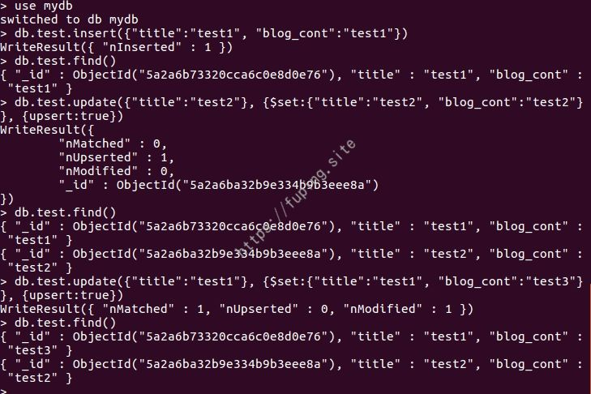

CVE监控之Python代码实现
0x01 前言
前几天在先知上看到伪全栈式安全研发：CVE监控这篇文章，就想着也实现一下代码进行最新CVE的监控。语言采用了Python，数据库也为Mongodb数据库。代码和实现的什么不重要，重要的是过程。
主要包括以下几个方面。
- 获取最新的CVE列表和详情
主要采用了python的requests模块和BeautifulSoup模块。 - 将最新的CVE信息存入数据库
数据库使用了Mongodb，采用了pymongo模块。 - 通过邮件发送最新的CVE信息
发送邮件采用了smtplib模块。 - 定时执行任务
使用了linux的crontab来实现。
0x02 实现过程
1. 获取最新的CVE列表和详情
访问https://cassandra.cerias.purdue.edu/CVE_changes/today.html ，可以获取每天新增的CVE信息。


通过查看源代码，发现没html没什么规律可言，都是些超链接。要想获取最新的列表，可以通过取文本中间的方法来获取。
这里需要获取New entries:和Graduations之间的内容。然后通过BeautifulSoup来解析其中的超链接。
主要代码如下：
1 | def getCVES():# 获取最新到CVE列表 |
获取文本中间内容的代码：
1 | def getMiddleStr(content, startStr, endStr): # 获取文本中间内容 |
运行效果：
超链接的地址是CVE的详情。随便进入一个查看效果。
例如：http://cve.mitre.org/cgi-bin/cvename.cgi?name=2017-0874
这里需要记录的信息有：CVE-ID、Description、Assigning CNA和Date Entry Created。

通过查看网页源码发现，所有需要记录的信息在一个表格里面。但该页面有很多table，而且没有明显的标识来区分。而该table在div中，可以通过id来获取。
CVE-ID可以直接通过soup.find(nowrap='nowrap').find('h2').string获取。其他的几个信息可以通过获取相应tr中的td中的内容获得。
这样就可以获取最新的CVE列表和详情。
2. 将最新的CVE信息存入数据库
数据库采用了Mongodb。安装方法apt-get install mongodb
然后启动数据库
1 | mkdir /var/data/ #创建数据存储位置 |
Mongodb数据库插入一条数据，一般使用的是insert。
1 | db.test.insert({"title":"test1", "blog_cont":"test1"}) |
如果我们想实现一个如果title存在，就对数据进行更新，不存在，就插入。可以这样来实现。
1 | db.test.update({"title":"test2"}, {$set:{"title":"test2", "blog_cont":"test2"}}, {upsert:true}) |
执行完成后最终有两条数据，title分别为test1和test2，对应的内容为test3和test2.

因此在插入数据的时候，我们可以直接使用db.test.update({"title":"test2"}, {$set:{"title":"test2", "blog_cont":"test2"}}, {upsert:true})这种方式来实现。

更新只需更改data内容即可。
为了数据库的安全性，使用
--bind_ip 127.0.0.1来设置数据库仅本地可以连接。更多mongodb数据库的配置可以参考MongoDB Mongodb.conf 配置 Auth。
3. 通过邮件发送最新的CVE信息
发送邮件这里用到了smtplib。
发送邮件比较简单，就直接贴代码了。
1 | def sendEmail(mail_msg): # 发送邮件 |
4. 定时执行任务
直接使用linux下的crontab来完成。
例如设置每天早上7点执行，可以这样设置：
1 | 0 7 * * * python /myJob/CVE-Monitor.py >> /log/CVE-Monitor.log |
根据https://cassandra.cerias.purdue.edu/CVE_changes/ 看到today.html更新的时间是明天的06:53，对应北京时间是19:53。若想及时获取，可以更换时间为20:00.
5.完善和优化
到这里监控脚本完成的差不多了，剩下就是如何来融合一起并改善了。
为了方便发送邮件内容和插入数据库，我们新建类CVEInfo。主要代码如下：
1 | class CVEInfo: |
为了美观，将邮件以html方式发送
1 | message = MIMEText(mail_msg, 'html', 'utf-8') |
邮箱收到的效果：
查看数据库数据：
从上面两张图片可以看到有三十多个，但我们有时候并不是都需要看。我们可以根据Description中关键信息来进行过滤，仅仅将我们需要关注的CVE信息发送到邮箱或进行入库操作。
如下图为获取CVE-2017-8295的信息。
然后修改main方法，根据是否有关注的CVE信息来决定邮件的内容。
这里先用本地服务器为例，新建today.html文件，其中包含CVE-2017-9805和CVE-2017-16241。
运行代码结果打印了一条包含了我们的关键字的数据。
邮件中的内容如下所示：
这样就能过滤其他CVE信息，仅仅记录我们关注的内容了。
0x03 总结
本文主要用到了BeautifulSoup解析网页和mongodb数据库的使用，然后就可以将想要的内容保存到数据库中。脚本并不限于在此处使用，也可以修改一下抓取其他网站内容。
代码地址：https://github.com/fupinglee/MyPython/blob/master/work/CVE-Monitor.py
查询的功能就不做了，若想实现其他功能，可以自行增加和修改。
0x03 参考
[1]https://xianzhi.aliyun.com/forum/topic/1694/
[2]http://blog.csdn.net/guoxingege/article/details/47339885